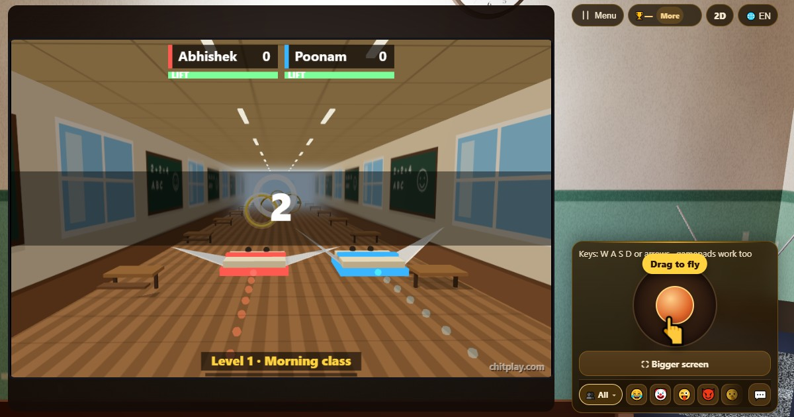

Flying Chit (Flying Chit)
- 👥 1–4 pemain
- Game arkade (di TV, dalam 3D)
- 🆓
Panduan Bahasa Indonesia
Terbangkan kertas bersayap melewati gelang di kelas tanpa akhir, raih kombo, dan kumpulkan koin untuk membuka gaya 3D baru.
English name: Flying Chit

Cara bermain
- Geser stik, atau pakai tombol panah, W A S D, atau gamepad, untuk mengarahkan kertas ke atas, bawah, kiri, dan kanan.
- Sebuah cincin menunjukkan di mana kertasmu akan melewati gelang berikutnya: cincin jadi hijau kalau bidikanmu tepat. Di dekat gelang, kertas ditarik pelan ke tengahnya.
- Terbang melewati gelang emas untuk mendapat kembali sebagian daya angkat. Bar di bawah skormu menunjukkan sisanya.
- Gelang berturut-turut membentuk kombo: ×2, ×3, sampai ×5 poin per gelang.
- Melewatkan gelang memutus kombo. Menabrak kipas angin atau tumpukan buku menguras banyak daya angkat.
- Kalau daya angkat habis, kertas melayang turun ke lantai dan penerbanganmu selesai.
- Setiap level baru dimulai dengan gelang emas besar: 10 poin dan daya angkat penuh.
Poin
Setiap gelang memberi poin sesuai kombonya: 1, lalu 2, 3, 4, dan 5 selama rangkaian berlanjut. Medali di 50, 200, 500, dan 1000 poin.
Siapa yang menang
Sendirian, kejar skor terbaikmu. Bersama yang lain, semua terbang bersamaan dan skor tertinggi menang.
Pertanyaan yang sering diajukan
Apakah Flying Chit pernah berakhir?
Tidak. Gelangnya makin kecil dan kelasnya makin cepat, jadi selalu ada skor lebih baik untuk dikejar.
Bisakah aku membuka kertas yang berbeda?
Bisa. Kumpulkan koin dari bermain, lalu buka Game Styles untuk membuka Blueprint Glider, Golden Origami, Neon Comet, atau Rose Kite. Semuanya mengubah tampilan 3D, bukan cara terbangnya.
Bisakah dua orang bermain di satu layar?
Bisa. Pilih Satu Ponsel: satu pemain memakai W A S D dan yang lain tombol panah, atau masing-masing memakai gamepad.
Apakah mirip game terbang lain?
Ini ide kami sendiri: kamu mengarahkan kertas dengan bebas dalam 3D dan menjaganya tetap melayang dengan melewati gelang, bukan mengetuk untuk mengepakkan sayap.
Cara bermain
- Sebagai tamu: Tanpa daftar dan tanpa login. Pilih nama dan langsung main.
- Lawan komputer: Kalau tidak ada teman, pemain komputer mengisi kursi kosong. Mudah, normal, atau sulit.
- Online: Duduk di meja umum bersama pemain dari seluruh dunia.
- Bareng teman di dekatmu: Buat permainan di satu HP lalu bagikan kode atau QR. Teman bergabung dari HP mereka.
- Di satu HP: Gantian pegang HP: satu perangkat cukup untuk seluruh keluarga.
Bahasa lain
- हिन्दी: फ़्लाइंग चिट
- Hinglish: Flying Chit
- Español: Flying Chit
- Português: Flying Chit
- Français: Flying Chit
- Deutsch: Flying Chit
- Türkçe: Flying Chit
- Italiano: Flying Chit
- 日本語: フライングチット
- 한국어: 플라잉 칫
- 中文: 飞翔纸条
- Русский: Летающая записка
- اردو: اڑتی پرچی
- नेपाली: उड्ने चिट
- বাংলা: উড়ন্ত চিরকুট
- English: Flying Chit · Aturan lengkap (Inggris)
Semua game


Di ChitPlay tidak ada uang sungguhan, taruhan, atau hadiah. Poin tidak bernilai.